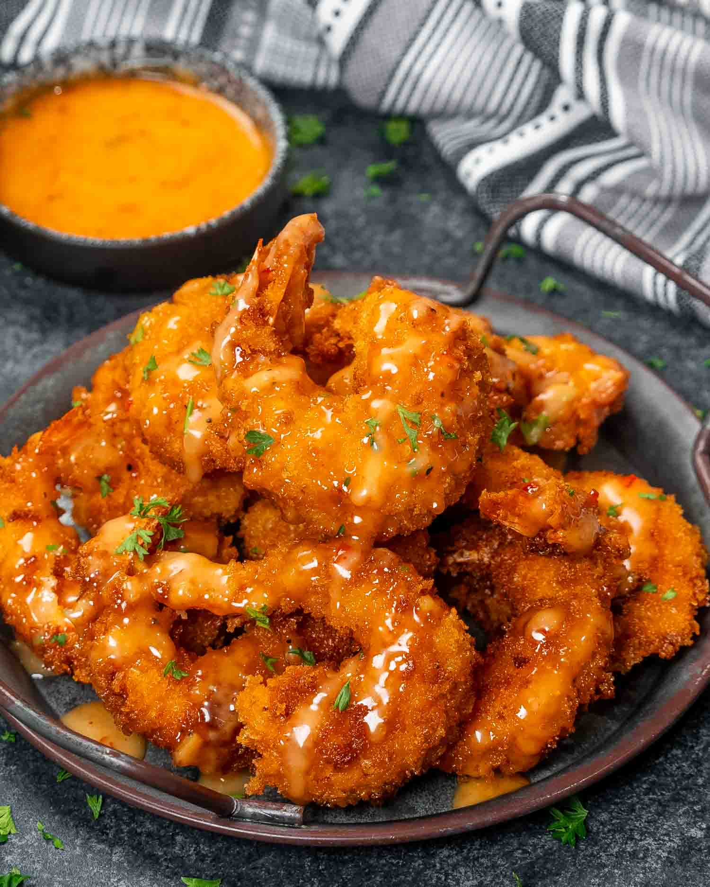

Bang Bang Shrimp

Description
Imagine shrimp so crispy they practically snap,
cloaked in a Panko breadcrumb armor and flavorful batter,
fried to golden perfection, and drizzled with a sauce so heavenly,
you’ll want to bathe in it. Meet my Bang Bang Shrimp—your new favorite indulgence.
Ingredients
For the Shrimp:
- 1 pound shrimp (large or jumbo, cleaned and deveined)
- ¾ cup buttermilk
- ¼ cup all-purpose flour
- ¼ cup cornstarch
- 1 egg
- ½ tablespoon garlic powder
- 1 teaspoon smoked paprika
- ½ tablespoon hot sauce
- ¼ teaspoon salt
- ¼ teaspoon black pepper
- 1 cup Panko breadcrumbs
- oil (for frying)
For the Sauce:
- ¼ cup mayonnaise
- 2 tablespoon sweet chili sauce (I used Frank’s)
- ½ tablespoon hot sauce (I used Frank’s hot sauce)
- 1 tablespoon honey
- salt and pepper (to taste)
Steps
- Mix all ingredients for the sauce together and refrigerate until ready for serving.
- In a medium bowl, mix flour, cornstarch, garlic powder, smoked paprika, salt and pepper.
To the bowl add the hot sauce, egg, buttermilk and whisk until you have a smooth batter.
- Add the shrimp to the bowl, toss to make sure each piece is coated in the batter and set aside.
- In another bowl add about a cup of Panko breadcrumbs.
- Coat each shrimp with breadcrumbs, add more breadcrumbs as needed.
- Heat oil in a skillet. Once the oil is hot, fry the shrimp for 2 minutes on each side till they are
a light golden brown. You may need to do this in batches so as to not overcrowd the shrimp. Transfer
the cooked shrimp to a plate lined with paper towels and pat any extra oil.
- Drizzle shrimp with sauce and serve.